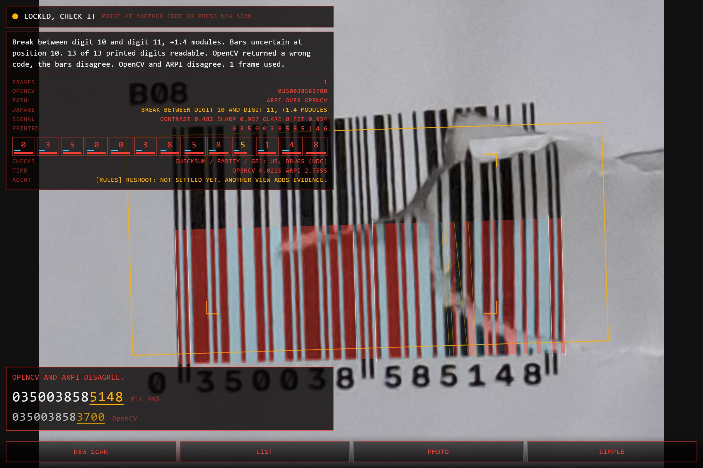
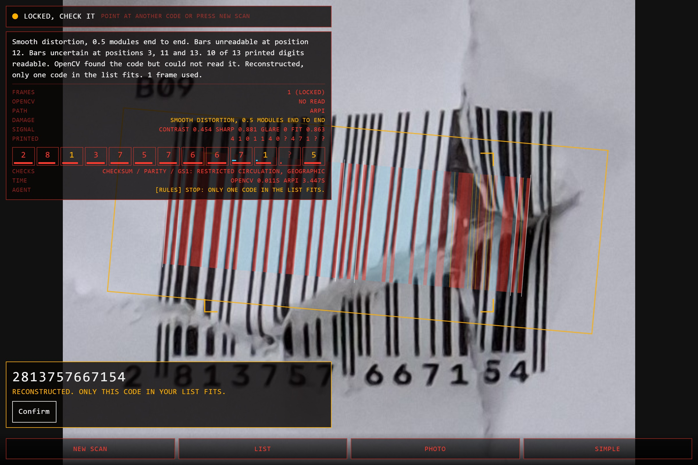
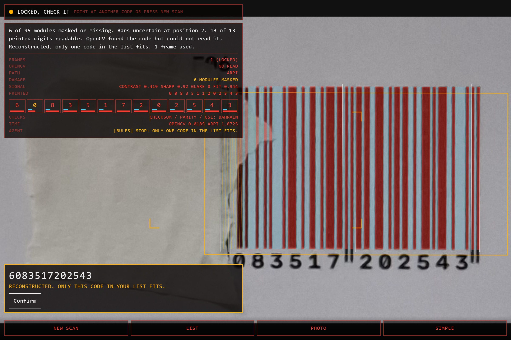
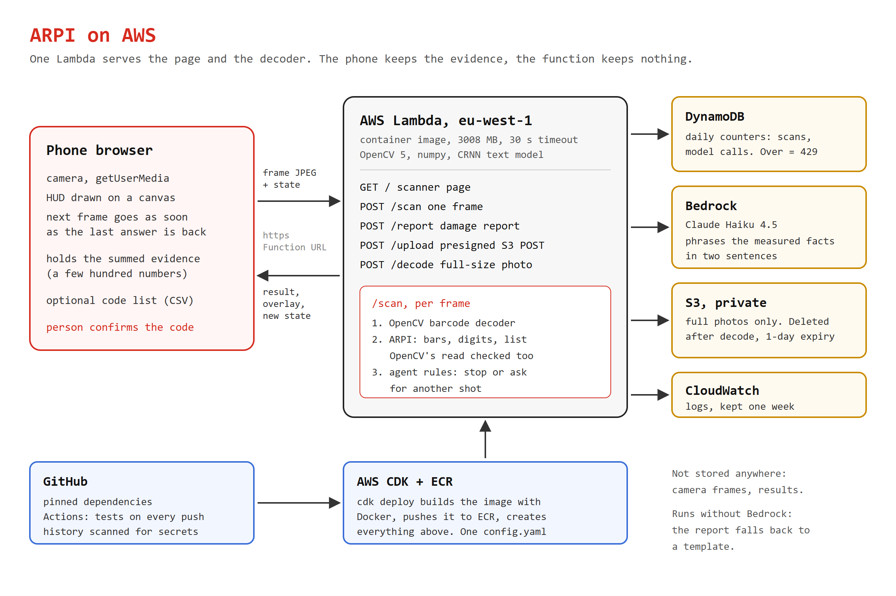
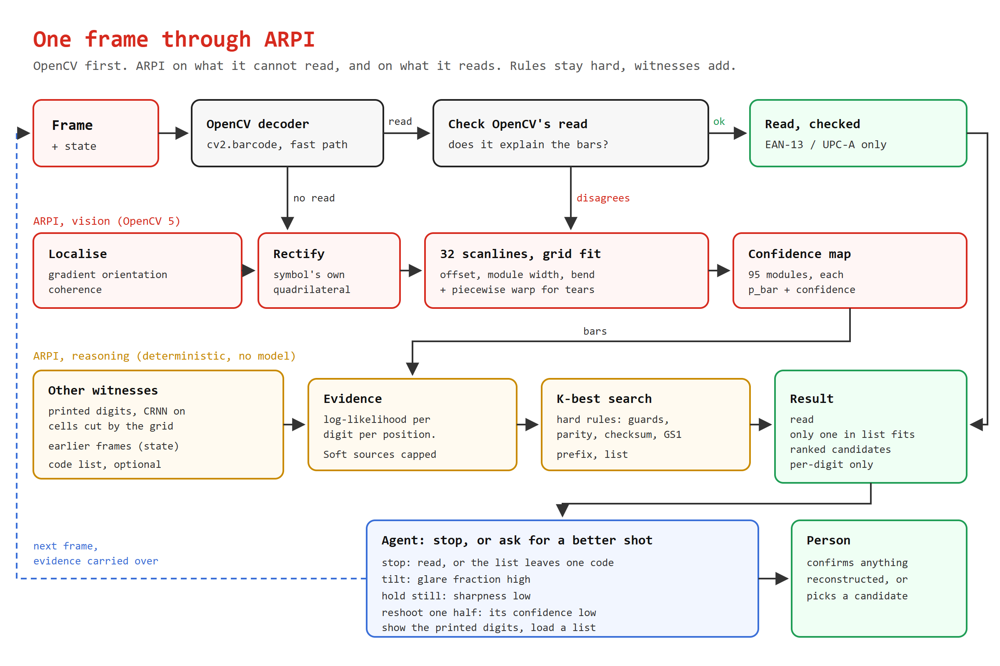
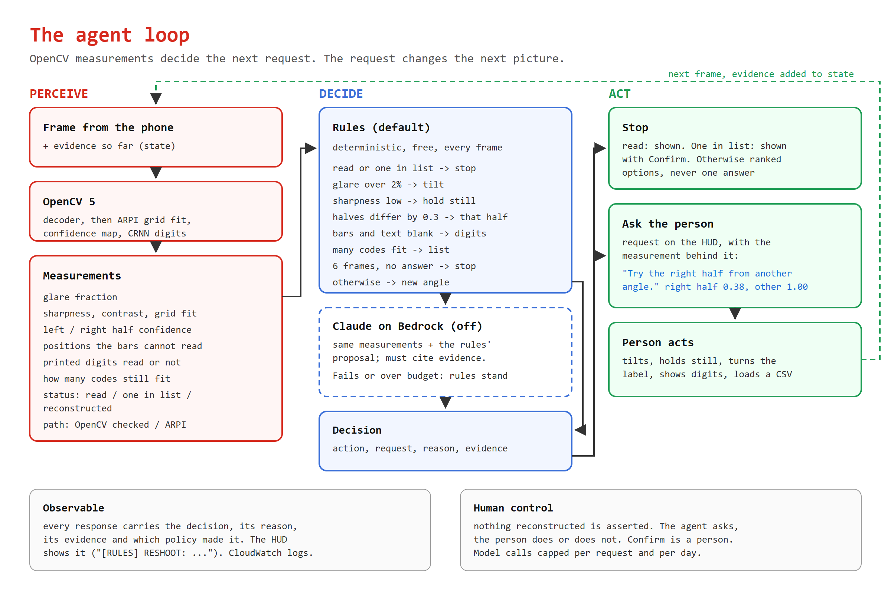
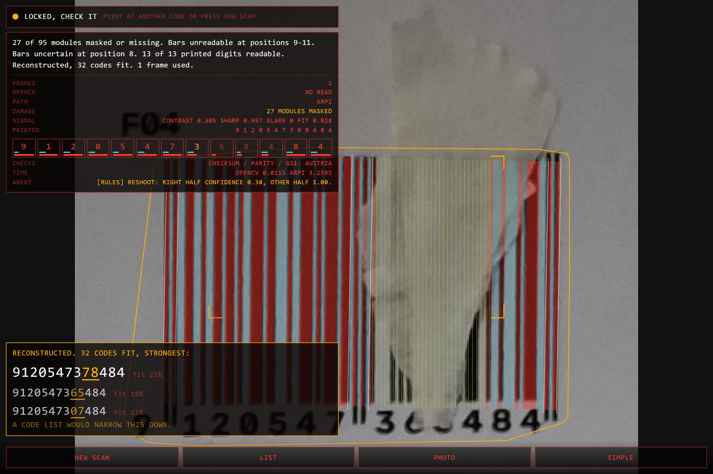

You try to read a barcode with a phone and it does not read. A label that has been through a warehouse, a torn corner, a strip of tape over it. The scanner beeps, you try again, and after a few tries you type the digits by hand. That was the fallback on the handheld terminals I specified for a printing ink plant in 2006 (my bachelor's thesis, "Implementation of Barcode Functionality in ERP-system"), and it is still the fallback.
An EAN-13 has twelve data digits and one check digit, and that is the whole defence:
A normal reader that loses part of the code fails the checksum and gives up. Or worse, it finds a wrong code that passes. One check digit catches nine wrong codes in ten, so a damaged read that is not rejected can still be wrong, and the output is a drug, a part or a price.
A damaged code is not a random string though. Each digit is seven modules with a fixed shape. The guard bars are fixed. The left half hides the 13th digit in an odd/even parity pattern, and 54 of the 64 possible patterns are illegal. The leading digits must be an assigned GS1 prefix. And in a real warehouse the code is one of the few thousand that exist in the company's ERP. Put together, two destroyed digits usually come down to a handful of candidates, and with a code list often to one.
QR and Data Matrix are out of scope on purpose. They carry Reed-Solomon error correction and already recover from serious damage by themselves.
Anyone who scans 1D codes for a living and loses time on the ones that do not read: warehouse and goods-in staff, stock takes, returns, a pharmacy counter, a shop till. Also the occasional person with a phone and a crumpled receipt. The product is a web page, so there is nothing to install: open the link, point the camera at one code, hold still.
The deployment I had in mind is plain. The customer drops a CSV of their valid codes next to it, exported from the ERP. No connector, no integration. It also works with no list at all, and then it says so when the answer is not unique.
The safety rule: ARPI never asserts a code it had to reconstruct. A reconstruction is shown as options with their fit, and the digits they differ in are marked. There is nothing to pick. When the list leaves only one code, the page says "Reconstructed. Only this code in your list fits" and still asks the person to confirm. The system selects, the human confirms.



The phone side is a single HTML page with no framework: camera through getUserMedia, a canvas HUD, and a loop that sends the next frame as soon as the last answer is back. A scan locks when the leading code holds steady over a few frames, and the result stays on screen after the code is taken away, until a different code is in view. Phones have several rear cameras, so the page checks each once and keeps the one that reports continuous autofocus. The server side is one Lambda function behind a Function URL. Serving the page from the same function gives the phone https, which a camera needs, without a separate web host.
The function holds nothing between requests. The evidence for the code being scanned is a few hundred numbers (a log-likelihood per digit per position). The phone keeps it and sends it back with the next frame. That is what makes a multi-frame scanner fit on Lambda.

cv2.barcode.BarcodeDetector goes first. Its boxes are reused when it found a symbol it could not read. Its reads are checked before they are accepted: anything that is not EAN-13 or UPC-A goes to ARPI (in this set the commonest wrong read is an EAN-8 read out of part of an EAN-13), and the read is accepted only if it explains the bars nearly as well as ARPI's best candidate.
The digits under the bars are a second, independent witness, read with cv2.dnn and the CRNN text model from OpenCV Zoo (pinned by hash). The bar grid already says which columns hold each digit, so each cell is cut out by geometry and the cells go to the network as two clean strips. No text detection. Orientation comes from the bars, never from the text: upside-down digits read as confident nonsense.
Every source becomes the same thing: a log-likelihood for every digit at every position, with the left half split by parity because the bars can tell the two digit sets apart and nothing else can. Sources add up. They do not vote on finished answers, because a vote would make the checksum one opinion among several.
The search is an exact K-best over checksum residue and parity, so a fully destroyed digit costs nothing extra. The structural rules (guards, parity, checksum, GS1 prefix) stay hard inside it, so no source can produce a code the rules forbid. Each soft source is capped so it cannot outvote clearly read bars, and that ceiling has its own test. Frames of the same label are not independent (the same smudge is in all of them), so n frames are scaled by n to the power -0.5 rather than trusted n times.
With a code list, the list is scored directly against the evidence. If one list code is clearly ahead of every other, the answer is "only one code in your list fits". If two fit about equally, both are shown.

After each frame the agent reads the scan's measurements (glare fraction, sharpness, contrast, per-half confidence, what the printed digits gave, how the code resolved) and returns one decision with the evidence it acted on:
| decision | when |
|---|---|
| aim | no code in view, or the frame was skipped (bad grid fit, low contrast) |
| stop | read and checked |
| stop, confirm | only one code in the list fits |
| stop | many frames and still no single answer: more of the same view will not help |
| reshoot: tilt | share of the code washed white by glare over the limit |
| reshoot: hold still | sharpness under the limit |
| reshoot: one half | the halves differ ("right half confidence 0.38, other half 1.00") |
| show the digits | the bars give nothing at some positions and the printed digits have not been read there |
| load a list | more than one code fits what is visible |
| reshoot: other angle | none of the above: another view adds evidence |
Each request changes what the person does next, and the next frame's evidence is added to what is already known. That is the loop: an OpenCV measurement leads to a request, the request leads to a different picture, the picture changes the answer.
The rules are deterministic and are the default. I also wired Claude on Bedrock to the same decision, given the same measurements and the rules' proposal, and required to cite what it acted on. In live use it added long, often pointless comments on codes that were already read, every one a model call, and it made the same decisions as the rules. So it is switched off and kept switchable. Bedrock (Claude Haiku 4.5) does one job in the deployed version: it phrases the measured damage facts in at most two sentences when a scan locks. The facts are extracted in code. Model output that gives advice or runs long is discarded and the template version of the same facts is shown.
tools/agent_trace.py runs the loop on the physical set. For each label, frame 1 is a crop from the harder photo of its sheet (an angled shot, or the sheet in a plastic sleeve under glare) and frame 2 a crop from the straight photo of the same sheet. Frame 1 goes through exactly the phone's path. If the rules say stop, the scan ends there; otherwise frame 2 goes in with the evidence carried over in the state. 80 labels from seven photo pairs. One crop that showed the neighbouring label is not scored, and one pair could not be located.
| no list | 72-code list | |
|---|---|---|
| stopped on frame 1 | 49 | 64 |
| right / wrong | 49 / 0 | 64 / 0 |
| asked for another frame | 31 | 16 |
| settled right by frame 2 | 31 | 16 |
| wrong, or still open | 0 | 0 |
So the agent never stopped on a wrong code, and every time it asked for more, the next frame settled it. Two things limit what that shows. The second photo was not taken in answer to the request, so this tests the decision to continue, not that a specific instruction ("the right half") was the one that helped. And frame 2 is the easy straight photo: OpenCV read every one of those 31 on its own. Requests on frame 1 without the list: 14 reshoot, 12 aim (frame not trusted), 4 load a list, 1 show the digits.
One trace, label A02 in the plastic sleeve:
frame 1 OpenCV: no read. ARPI: reconstructed, top candidate 3686808208137 (wrong, not asserted)
contrast 0.18, sharpness 0.86, left half 1.00, right half 0.55
agent: reshoot "Try the right half from another angle, the other half is already read."
reason "Right half confidence 0.55, other half 1.00."
frame 2 out of the sleeve, evidence carried over
OpenCV: 3686808208007, checked against the bars: read
agent: stop "Read and checked." truth 3686808208007
The OpenCV measurement (right half confidence) chose the request, the request named the half that was wrong, and the answer was held back until it was settled.
The glare rule never fired on these photos. It looks for pixels at full white, and a plastic sleeve under diffuse light lowers contrast (0.17 to 0.31 here) instead of blowing anything out. The agent asked for the weak half or a list instead, which still worked, but "tilt the label" was not what it said.
cdk deploy builds the image with Docker, pushes it to ECR and creates the function, bucket, table, log group and IAM policy. infra/config.yaml is the only place a region, model or limit is named. Dependencies are pinned in requirements.txt and the Dockerfile.The dataset was built first. 72 EAN-13 codes from random GS1 prefixes, printed on six A4 sheets at nominal size (0.34 mm module), each with an id printed beside it. Then damaged by category: scratch, tear, crumple, fade, ink smear, tape and objects over the codes, glare through a plastic sleeve, motion blur. Photographed with a Samsung phone at 4080 x 3060. Ground truth is exact because I printed it. 23 photos; a manifest records each file's hash, sheet and damage.
Codes are matched to their truth by OpenCV's reads, by the printed id and by the 2 x 6 layout, never by ARPI's answer. Two runs:
"Asserted" means the system committed to one code: a clean read, or "only one code in the list fits". Ranked candidates are not an assertion. The row I watch most is asserted and wrong.
| OpenCV | ARPI alone | ARPI + list | cascade, checked | cascade + list | |
|---|---|---|---|---|---|
| right code first | 152 | 210 | 229 | 212 | 229 |
| asserted | 154 | 110 | 228 | 168 | 226 |
| asserted and wrong | 2 | 0 | 0 | 0 | 0 |
The cascade without the check (trust OpenCV) asserts 169 right and 2 wrong. The free symbology check removes one; the full check against the bars removes both, at the cost of one right read and ARPI's time on every symbol.
| OpenCV | ARPI alone | ARPI + list | cascade | cascade + list | |
|---|---|---|---|---|---|
| right code first | 160 | 188 | 196 | 186 | 194 |
| asserted | 161 | 103 | 194 | 162 | 190 |
| asserted and wrong | 1 | 0 | 0 | 0 | 0 |
The 15 crops left out are not clean either. In one of them, with the list loaded, ARPI answered with the code of the label above the one aimed at (A02 for A04, both in the crop). That is a real code in the picture, but not the one the person pointed at, and it is the kind of mistake the phone's aiming (the symbol nearest the centre) is there to prevent. An earlier run of the same set, before the last fixes, had three wrong "only one code in the list fits" answers on steep angles and glare; they now come back as candidates. Any answer of that kind is shown as "Reconstructed, only this code in your list fits" with a Confirm button, never as a plain read.
| damage | codes | OpenCV right | ARPI first | ARPI asserted | ARPI wrong |
|---|---|---|---|---|---|
| clean (straight + angled) | 144 | 98 | 126 | 85 | 0 |
| glare | 24 | 11 | 20 | 6 | 0 |
| tear | 24 | 17 | 21 | 3 | 0 |
| crumple | 12 | 9 | 11 | 2 | 0 |
| fade | 12 | 8 | 10 | 6 | 0 |
| smear | 12 | 7 | 12 | 8 | 0 |
| tape | 12 | 2 | 10 | 0 | 0 |
Without a list ARPI asserts little on damaged codes and ranks the truth first on most of them. That is the rule working: a reconstruction is a candidate list. The list is what turns it into an answer.
Rendered labels, labelled synthetic wherever quoted. On 224 images over ten damage kinds OpenCV read 144, ARPI ranked the right code first on 186 and asserted 85, none wrong. An earlier synthetic run covered the hard case the physical set does not have: a list of 1000 codes from one company prefix, where neighbours differ in one digit. On 48 tears and occlusions of 6-20% width OpenCV read 10, ARPI asserted 35 with 0 wrong and returned the rest as candidates.

python -m arpi photo.jpg --known codes.csv), for sites that will not let anything leave.Damaged-barcode reconstruction is patented in several places: Intermec's permutation-based reconstruction of irregularly damaged codes (US6039252, 1998), self-checkout systems that predict the full code from a partial scan and offer ranked candidates, parcel networks that match a damaged code against candidates using shipper and date, Brady's machine-learning diagnosis of why a decode failed (US12001916) and Socure's generative enhancement of barcode images (US11875259). Commercial SDKs also read damaged and curved codes. That says the problem is worth money. I did not find an earlier system that puts machine vision, an exact constraint search and an agent that asks for a better photo together, open, with its false positive rate published.
pip install -r requirements.txt python tools/fetch_models.py # CRNN text model, pinned by hash python -m pytest # 63 tests python tools/serve_local.py # scanner page at http://localhost:8013 python -m arpi photo.jpg --known codes.csv python tools/eval_sheets.py data/physical/photos --cascade python tools/eval_singles.py data/physical/photos python tools/agent_trace.py data/physical/photos --out results/agent-2026-10-05 python tools/evaluate.py --n 8 # synthetic sweep aws sso login --profile <profile> cd infra && npx cdk deploy --profile <profile>
The physical photos are not in the repo (size, and the background of a few shows things that are not mine to publish). The manifest lists each file with its SHA-256.
Two problems from my own use, both Code 128. GS1-128 labels on our 1 kg ink tins at work are long and curve round the tin, and a static scanner sometimes cannot read them at all. With a streaming camera you can turn the tin, or the camera, and stitch the parts across frames. And Finnish invoice barcodes for payments, read from a pdf on a pc screen. The bank barcode has its own stack of checks (IBAN, reference number, due date), and a payment is exactly where a wrong code must never be asserted.